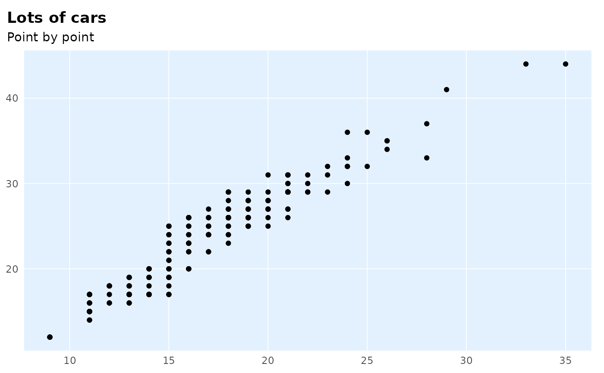
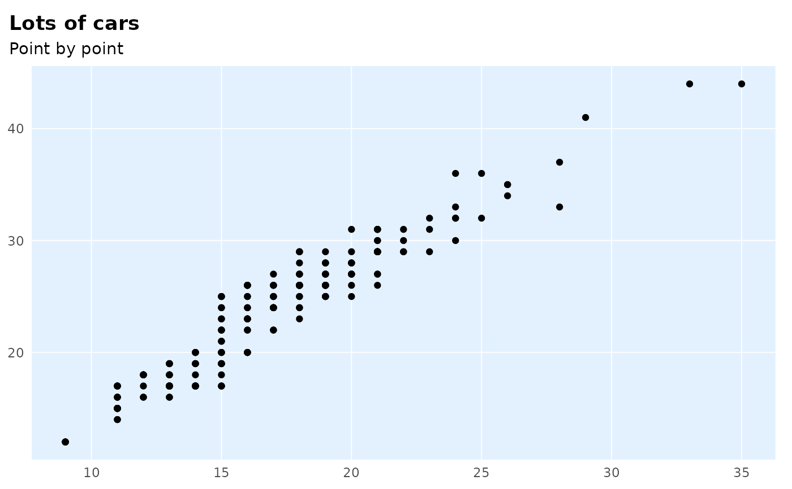
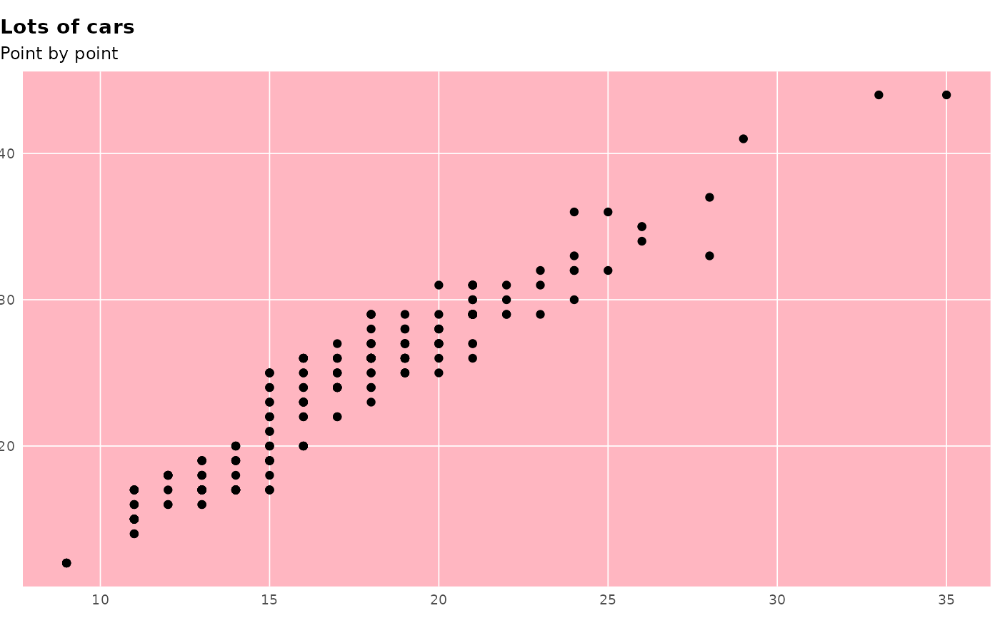
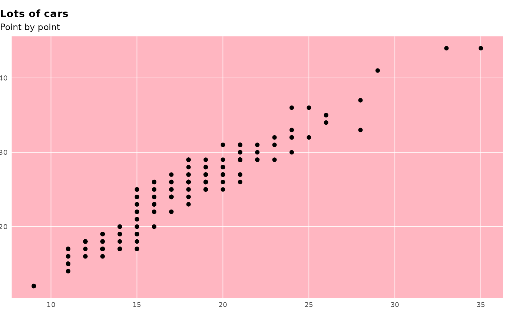

A wrapper around `theme()` which provides several shortcuts to setting common options and several defaults. See more in Details.
theme_ptrr(
gridlines = c("y", "x", "both", "scatter", "none"),
base_size = 11,
family = "IBM Plex Sans Condensed",
title_family = "IBM Plex Sans",
multiplot = FALSE,
tonecol = ptclr_l,
margin_side = 6,
margin_bottom = 6,
plot.title.position = "plot",
axis_titles = FALSE,
richtext = FALSE,
map = FALSE,
...
)Arguments
- gridlines
Whether to display major gridlines along `"y"` (the default), `"x"`, `"both"` or draw a `"scatter"`, which has both gridlines and inverted colours.
- base_size
Numeric text size in pts, affects all text in plot. Defaults to 11.
- family, title_family
font family to use for the (title of the) plot. Defaults to `"IBM Plex Sans"` for title and `"IBM Plex Sans Condensed"` for plot.
- multiplot
if set to TRUE, provides better styling for small multiples created using `facet_*`.
- margin_side, margin_bottom
size of left and right / bottom margin around plot, in pts. Defaults to 6. Set to 0 to align flush with text in a Word document.
- plot.title.position
where to align the title. Either "plot" (the default, difference from `theme()` default) or `"panel"`.
- map
if set to TRUE, provides better styling for maps created using `geom_sf()`. Overrides `gridlines`.
- ...
Arguments passed on to
ggplot2::themelineall line elements (
element_line())rectall rectangular elements (
element_rect())titleall title elements: plot, axes, legends (
element_text(); inherits fromtext)aspect.ratioaspect ratio of the panel
axis.text,axis.text.x,axis.text.y,axis.text.x.top,axis.text.x.bottom,axis.text.y.left,axis.text.y.righttick labels along axes (
element_text()). Specify all axis tick labels (axis.text), tick labels by plane (usingaxis.text.xoraxis.text.y), or individually for each axis (usingaxis.text.x.bottom,axis.text.x.top,axis.text.y.left,axis.text.y.right).axis.text.*.*inherits fromaxis.text.*which inherits fromaxis.text, which in turn inherits fromtextaxis.ticks,axis.ticks.x,axis.ticks.x.top,axis.ticks.x.bottom,axis.ticks.y,axis.ticks.y.left,axis.ticks.y.righttick marks along axes (
element_line()). Specify all tick marks (axis.ticks), ticks by plane (usingaxis.ticks.xoraxis.ticks.y), or individually for each axis (usingaxis.ticks.x.bottom,axis.ticks.x.top,axis.ticks.y.left,axis.ticks.y.right).axis.ticks.*.*inherits fromaxis.ticks.*which inherits fromaxis.ticks, which in turn inherits fromlineaxis.ticks.length,axis.ticks.length.x,axis.ticks.length.x.top,axis.ticks.length.x.bottom,axis.ticks.length.y,axis.ticks.length.y.left,axis.ticks.length.y.rightlength of tick marks (
unit)axis.line,axis.line.x,axis.line.x.top,axis.line.x.bottom,axis.line.y,axis.line.y.left,axis.line.y.rightlines along axes (
element_line()). Specify lines along all axes (axis.line), lines for each plane (usingaxis.line.xoraxis.line.y), or individually for each axis (usingaxis.line.x.bottom,axis.line.x.top,axis.line.y.left,axis.line.y.right).axis.line.*.*inherits fromaxis.line.*which inherits fromaxis.line, which in turn inherits fromlinelegend.backgroundbackground of legend (
element_rect(); inherits fromrect)legend.marginthe margin around each legend (
margin())legend.spacing,legend.spacing.x,legend.spacing.ythe spacing between legends (
unit).legend.spacing.x&legend.spacing.yinherit fromlegend.spacingor can be specified separatelylegend.keybackground underneath legend keys (
element_rect(); inherits fromrect)legend.key.size,legend.key.height,legend.key.widthsize of legend keys (
unit); key background height & width inherit fromlegend.key.sizeor can be specified separatelylegend.textlegend item labels (
element_text(); inherits fromtext)legend.text.alignalignment of legend labels (number from 0 (left) to 1 (right))
legend.titletitle of legend (
element_text(); inherits fromtitle)legend.title.alignalignment of legend title (number from 0 (left) to 1 (right))
legend.positionthe position of legends ("none", "left", "right", "bottom", "top", or two-element numeric vector)
legend.directionlayout of items in legends ("horizontal" or "vertical")
legend.justificationanchor point for positioning legend inside plot ("center" or two-element numeric vector) or the justification according to the plot area when positioned outside the plot
legend.boxarrangement of multiple legends ("horizontal" or "vertical")
legend.box.justjustification of each legend within the overall bounding box, when there are multiple legends ("top", "bottom", "left", or "right")
legend.box.marginmargins around the full legend area, as specified using
margin()legend.box.backgroundbackground of legend area (
element_rect(); inherits fromrect)legend.box.spacingThe spacing between the plotting area and the legend box (
unit)panel.borderborder around plotting area, drawn on top of plot so that it covers tick marks and grid lines. This should be used with
fill = NA(element_rect(); inherits fromrect)panel.spacing,panel.spacing.x,panel.spacing.yspacing between facet panels (
unit).panel.spacing.x&panel.spacing.yinherit frompanel.spacingor can be specified separately.panel.ontopoption to place the panel (background, gridlines) over the data layers (
logical). Usually used with a transparent or blankpanel.background.plot.backgroundbackground of the entire plot (
element_rect(); inherits fromrect)plot.title.position,plot.caption.positionAlignment of the plot title/subtitle and caption. The setting for
plot.title.positionapplies to both the title and the subtitle. A value of "panel" (the default) means that titles and/or caption are aligned to the plot panels. A value of "plot" means that titles and/or caption are aligned to the entire plot (minus any space for margins and plot tag).plot.subtitleplot subtitle (text appearance) (
element_text(); inherits fromtitle) left-aligned by defaultplot.captioncaption below the plot (text appearance) (
element_text(); inherits fromtitle) right-aligned by defaultplot.tagupper-left label to identify a plot (text appearance) (
element_text(); inherits fromtitle) left-aligned by defaultplot.tag.positionThe position of the tag as a string ("topleft", "top", "topright", "left", "right", "bottomleft", "bottom", "bottomright) or a coordinate. If a string, extra space will be added to accommodate the tag.
strip.placementplacement of strip with respect to axes, either "inside" or "outside". Only important when axes and strips are on the same side of the plot.
strip.text,strip.text.x,strip.text.yfacet labels (
element_text(); inherits fromtext). Horizontal facet labels (strip.text.x) & vertical facet labels (strip.text.y) inherit fromstrip.textor can be specified separatelystrip.switch.pad.gridspace between strips and axes when strips are switched (
unit)strip.switch.pad.wrapspace between strips and axes when strips are switched (
unit)completeset this to
TRUEif this is a complete theme, such as the one returned bytheme_grey(). Complete themes behave differently when added to a ggplot object. Also, when settingcomplete = TRUEall elements will be set to inherit from blank elements.validateTRUEto runvalidate_element(),FALSEto bypass checks.
- axis.title
same as in theme(), but with a default of `element_blank()`.
Value
a ggtheme object
Details
In particular, the theme: - displays only major gridlines, allowing you to quickly switch which ones; gridlines are thinner, panel has white background - provides quick option to draw a scatter with grey background - switches defaults for title alignment - turns axis labels off by default: in practice, x axes are often obvious and y axes are better documented in a subtitle - sets backgrounds to a ptrr-style shade - sets plot title in bold and 120
All the changed defaults can be overriden by another call to `theme()`.
Note
The default fonts - IBM Plex Sans and IBM Plex Sans Condensed - are contained in this package and can be registered with the system using `import_fonts()`. You should then install them onto your system like any font, using files in the directories described in the `import_fonts()` messsage. You can also set the `ptrr.loadfonts` option to TRUE for the fonts to be registered at package load.
See also
Other Making charts:
flush_axis
Examples
library(ggplot2)
# NB when `theme_ptrr()` is used in these examples, fonts
# are set to 'sans' to pass checks on computers without the
# sans included. If you have these fonts (see Note) you can
# leave these parameters at their default values.
# the basic plot for illustration, theme not used
p <- ggplot(mpg) +
geom_bar(aes(y = class)) +
labs(title = "Lots of cars", subtitle = "Count of numbers")
# using `theme_ptrr()` defaults
p +
theme_ptrr("x", family = "sans", title_family = "sans")
 # in combination with `flush_axis`:
p +
theme_ptrr("x", family = "sans", title_family = "sans") +
scale_x_continuous(expand = flush_axis)
# in combination with `flush_axis`:
p +
theme_ptrr("x", family = "sans", title_family = "sans") +
scale_x_continuous(expand = flush_axis)
 # scatter
ggplot(mpg) +
geom_point(aes(cty, hwy)) +
theme_ptrr("scatter", family = "sans", title_family = "sans") +
labs(title = "Lots of cars", subtitle = "Point by point")

# Smaller text, flush alignment
ggplot(mpg) +
geom_point(aes(cty, hwy)) +
theme_ptrr("scatter", base_size = 9, margin_side = 0,
family = "sans", title_family = "sans") +
labs(title = "Lots of cars", subtitle = "Point by point")
# scatter
ggplot(mpg) +
geom_point(aes(cty, hwy)) +
theme_ptrr("scatter", family = "sans", title_family = "sans") +
labs(title = "Lots of cars", subtitle = "Point by point")

# Smaller text, flush alignment
ggplot(mpg) +
geom_point(aes(cty, hwy)) +
theme_ptrr("scatter", base_size = 9, margin_side = 0,
family = "sans", title_family = "sans") +
labs(title = "Lots of cars", subtitle = "Point by point")
 # Override defaults changed inside `theme_ptrr()`
ggplot(mpg) +
geom_point(aes(cty, hwy)) +
theme_ptrr("scatter", base_size = 9, margin_side = 0,
family = "sans", title_family = "sans") +
labs(title = "Lots of cars", subtitle = "Point by point") +
theme(panel.background = element_rect(fill = "lightpink"))

# Override defaults changed inside `theme_ptrr()`
ggplot(mpg) +
geom_point(aes(cty, hwy)) +
theme_ptrr("scatter", base_size = 9, margin_side = 0,
family = "sans", title_family = "sans") +
labs(title = "Lots of cars", subtitle = "Point by point") +
theme(panel.background = element_rect(fill = "lightpink"))
